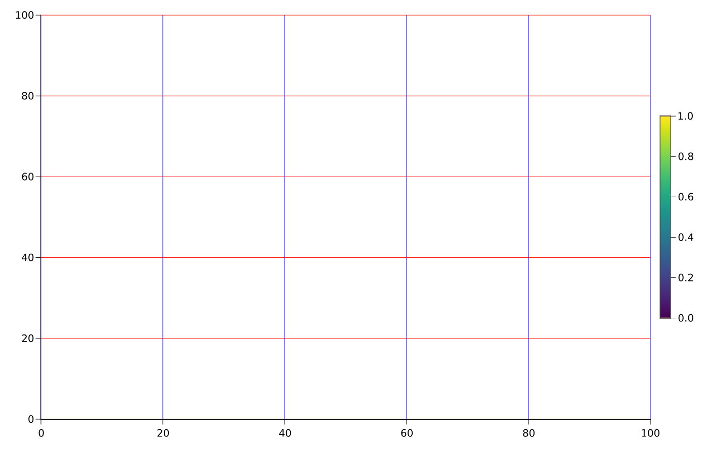

Theming
Every layoutable object can be themed by adding attributes under a key with the same name as the layoutable (LAxis, LColorbar, etc.).
Also, you can set default column and row gaps, as well as the font family and size used by almost all layoutables by default:
set_theme!(
font = "Arial", # inherited by layoutables if not overridden
fontsize = 12, # inherited by layoutables if not overridden
rowgap = 10,
colgap = 20,
)Here is an example of theming LAxis and LColorbar:
using MakieLayout
using AbstractPlotting
set_theme!(
LAxis = (topspinevisible = false, rightspinevisible = false,
xgridcolor = :blue, ygridcolor = :red),
LColorbar = (width = 20, height = Relative(0.5))
)
scene, layout = layoutscene(resolution = (1400, 900))
ax = layout[1, 1] = LAxis(scene)
cb = layout[1, 2] = LColorbar(scene)